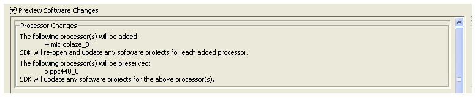
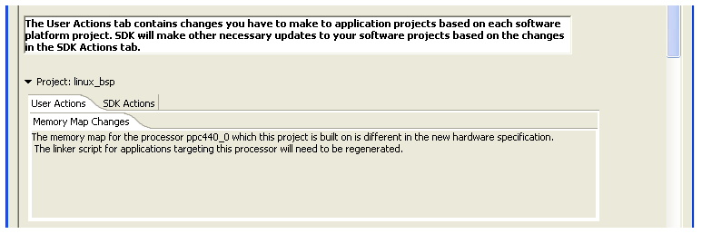
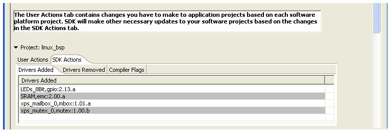

The Preview Software Changes panel lists the changes that are required in your software projects when the hardware specification file used by the workspace is changed.
You might see this panel while doing one of the following:

If a processor is deleted from the hardware design, the software projects related to that processor are closed in the workspace, but not removed. They will no longer be listed in the C/C++ Projects view. You can, however, view the contents of these projects in the Navigator view.
If the processor is added to the hardware design, it is listed in the C/C++ Projects view. If the workspace includes any closed software projects for this processor, they are re-opened.

Tasks that might require your action or attention due to changes in the hardware design are listed in the User Actions tab under the project name. For example, Memory Map Changes might require you to change the linker script of the software application. The tasks that are listed under User Actions depend on your particular project.

Tasks that SDK performs to match the Software Projects to changes in the hardware design are listed in the SDK Actions tab under the project name. The following sections might contain information: